Матеріали Дентсплай · журнал «ДентАрт» 2015 №1 (78)
Естетичні вініри з використанням матеріалу Церамко 3
ESTHETICAL VENEERS MADE OF CERAMCO 3
Понад 10 років при створенні естетичних реставрацій ми використовуємо керамічну масу Церамко/Ceramco. Спочатку це був матеріал Церамко II, тепер — Церамко 3. Матеріал Церамко добре зарекомендував себе при виготовленні металокерамічних конструкцій. Він дає керамістові всі переваги облицювального матеріалу для сплавів: надійність на всіх етапах виготовлення коронки за рахунок високої термічної стабільності, зручність у використанні та гарантовані результати завдяки своїм естетичним властивостям. Але матеріал Церамко 3 має і менш відоме застосування. У цій статті буде описано процес виготовлення вінірів за допомогою матеріалу Церамко 3.
Клінічний приклад
Молодий пацієнт був незадоволений дисколоритом і стертістю верхніх різців. Передні зуби були темнішими і сірішими, ніж усі інші зуби однорідного відтінку та яскравості. Було розглянуто різні варіанти лікування і прийнято рішення реставрувати центральні та латеральні різці вінірами, які б відповідали відтінком і яскравістю іншим зубам (фото 1).
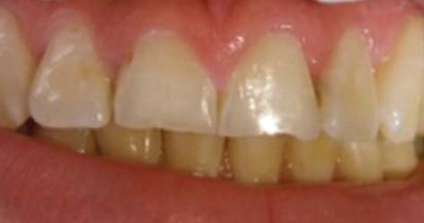
Діагностика
Після зняття відбитків полівінілсилоксановим матеріалом, що забезпечує максимальну точність і стабільність вихідної інформації, для фіксації даних лицьової дуги в лабораторії відлито майстер-модель і робочу модель. Виготовлене деталізоване діагностичне воскове моделювання (фото 2), яке разом з майстер-моделлю передали стоматологові для проведення консультації з пацієнтом. Це дозволило пацієнтові порівняти вихідну ситуацію у порожнині рота з пропонованим кінцевим результатом і затвердити план лікування.
Після затвердження плану лікування пацієнтом стоматолог і технік разом склали деталізовану схему розподілу відтінків для виготовлення вінірів. Важливо, щоб цей етап виконувався до препарування зубів, коли вони у природному зволоженому стані, оскільки після препарування зуби можуть дегідратувати і матимуть дещо інші колірні характеристики. Стоматолог провів препарування зубів за допомогою силіконового ключа (фото 3), отриманого за діагностичним восковим моделюванням. Було видалено приблизно 0,6 мм твердих тканин (фото 4), отримано нові робочі відбитки і відправлено в лабораторію для виготовлення постійних вінірів. За допомогою шаблону, отриманого з діагностичного воскового моделювання, стоматолог виготовив тимчасові пластмасові вініри, які були тимчасово зафіксовані пацієнтові, доки виготовлялися постійні.
Шаблон передніх зубів був створений на підставі нової майстер-моделі за допомогою високоточного м'якого силіконового матеріалу Дегуформ/Deguform (фото 5).
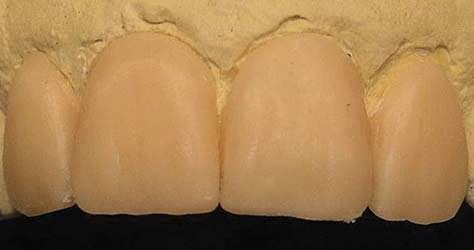
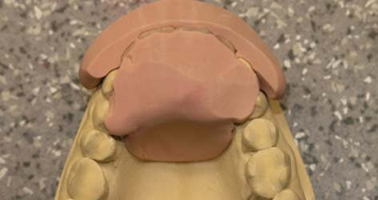
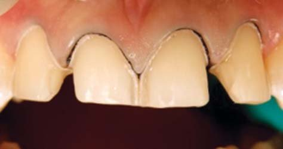
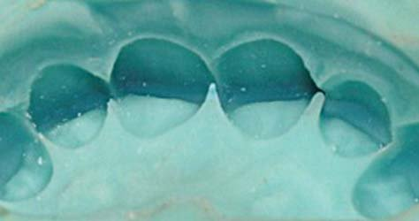
Вогнетривка модель
Вогнетривка модель відлита з відповідного вогнетривкого матеріалу для виготовлення вінірів Дуцера Лей Суперфіт/Ducera Lay Superfit (ДегуДент DeguDent), який акуратно внесено на вібраційному столику в силіконовий шаблон. Основа моделі не повинна бути занадто масивною, інакше модель поглине занадто багато тепла у процесі випалювання кераміки, що може призвести до її недопікання. Після затвердіння вогнетривку модель можна обробити і виділити межу препарування, наприклад хімічним олівцем (фото 6).
Модель має пройти дегазаційне випалювання у звичайній печі для випалювання кераміки з використанням такої програми: початкова температура випалювання — 650°C, час сушіння — 5 хв для моделей до 6 одиниць, 7 хв — для робіт більшої протяжності, швидкість нагрівання — 55°C/хв з максимальною температурою випалювання 1100°C. Ця температура витримується протягом 5 хв (7 хв для великих моделей).
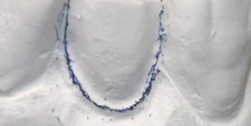
Моделювання вінірів
До процедури моделювання зони препарування були запечатані тонким шаром глазурі і стандартного глазурувального випалу для утворення твердої блискучої поверхні, яка запобігає поглинанню вологи з кераміки вогнетривкою моделлю у процесі моделювання кераміки. Цей шар повинен бути дуже тонким, щоб не порушити крайове прилягання кераміки, особливо у пришийковій і проксимальних зонах. Першим керамічним шаром наносилася суміш опакового дентину і модифікатора дентину в пришийкову зону, щоб колірна насиченість відповідала нижнім різцям пацієнта. Потім було додано опаковий дентин, щоб розмити контур препарування різцевого краю (фото 7).
Перед подальшим зрізанням маси для нанесення індивідуальних ефектів на основі силіконових шаблонів і деталізованої схеми розподілу відтінків для остаточного контурування реставрації був використаний відповідний дентиновий відтінок. У пришийковій третині відтворені опакові горизонтальні лінії за допомогою натуральної емалі відтінку слонова кістка/ivory, тоді як опалова емаль відтінку світла/light, натуральна емаль відтінків блакитна/blue і прозора/clear використовувалися для відтворення природної прозорості ріжучого краю. Акуратне пошарове нанесення керамічної маси важливе не лише для точності відтворення відтінку, але й для забезпечення точності крайового прилягання (фото 8). Ключовий момент при використанні вогнетривкої моделі — наявність максимально точної схеми розподілу відтінків, тому що перевірити відтінок у процесі виготовлення складно.
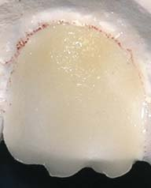
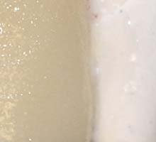
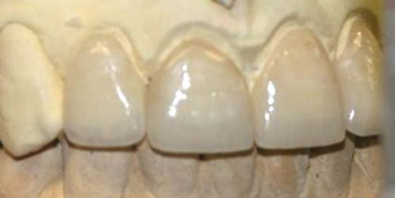
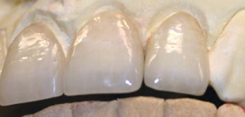
Внесення доповнень, характеризація та глазурування робилися стандартно перед тим, як вініри зняли з вогнетривкої моделі. Процес знімання проводився обертовими інструментами для видалення основної маси вогнетривкого матеріалу, потім виконувалася легка піскоструминна обробка (тиск 2 бар, розміри частинок скла 25 мкм). Слід намагатися запобігти ушкодженню країв вінірів. Якщо на цьому етапі потрібна повторна корекція, її можна зробити за допомогою низькотемпературної кераміки.
Примірювання і фіксація вінірів
У клініці було здійснено примірювання вінірів для перевірки прилягання, щільності контактних пунктів та відповідності відтінків природним зубам. На фото 11 добре видно дегідратацію інших зубів у процесі примірювання. Можна порівняти це зображення з фото 12 і 13 після фіксації вінірів та регідратації зубів. Це ілюструє, чому визначення схеми відтінків завжди має робитися до початку лікування. Вініри фіксувалися на цемент Калібра/Calibra (Дентсплай/Dentsply). Після фіксації виконано остаточний контроль функціональних рухів. Пацієнт задоволений кінцевим результатом.
Зверніть увагу на чудове відтворення відтінку, характеристики ріжучого краю і пришийкової зони (фото 12-14), поліпшені контури і профіль.
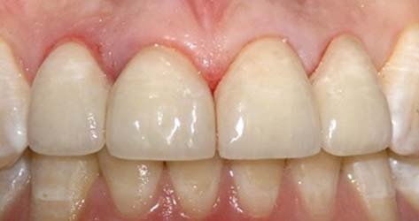
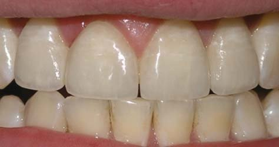
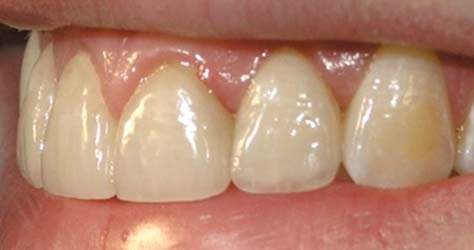
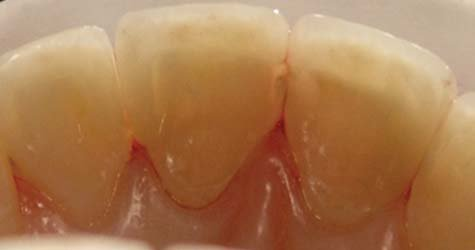
Висновок
Комбінуючи керамічну масу Церамко 3 і техніку роботи з вогнетривкою моделлю, можна виконувати високоестетичні безметалові конструкції: вініри, вкладки та накладки високої якості. Ця методика, у світлі зниження цін і зростання дефіциту часу, дає можливість рентабельних та економічних щодо затрат часу естетичних рішень.